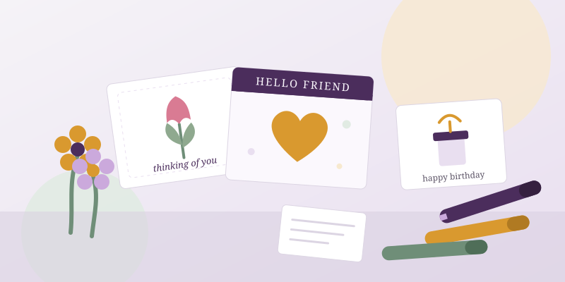

From home · No schedule required
Make something for a resident
Residents keep handmade cards and flowers on their nightstands long after a session ends. Anyone can do this, at any age, on any timeline.
Things you could make
- Greeting and birthday cards with a short handwritten note
- Paper or pipe-cleaner flowers and small bouquets
- Large-print song-lyric sheets and word puzzles
- "Letters to a friend": a few lines about your week or a place you love
Good for
Students, families with kids, scout troops, clubs, and anyone who can't commit to a regular time. Email us and we will go over the details together.
Tell us what you'd like to make